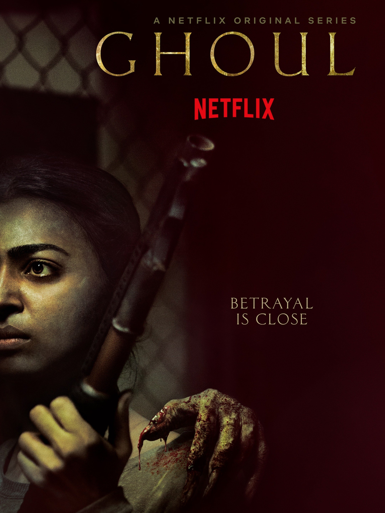

11 Best Horror TV Shows of All Time
1. Supernatural (2005-2020):
8.4/10
Brothers Dean and Sam follow in their father's footsteps and set out to eliminate monsters, demons and other supernatural entities that exist on Earth.
No. of seasons: 15
2. The Haunting of Hill House (2018):
8.6/10

Flashing between past and present, a fractured family confronts haunting memories of their old home and the terrifying events that drove them from it.
No. of seasons: 2
3. The Haunting of Bly Manor (2020):
7.3/10

A young governess arrives at Bly Manor and begins to see apparitions haunting the estate.
No. of seasons: 2
4. The Exorcist (2016-2017):
7.9/10
The Rance family is haunted by a powerful demonic presence in their house. Supernatural events keep happening until two priests join forces to defeat evil forces.
No. of seasons: 2
5. Archive 81 (2021):
7.3/10
An archivist hired to restore a collection of tapes finds himself reconstructing the work of a filmmaker and her investigation into a dangerous cult.
No. of seasons: 1
6. Dark (2017-2020):
8.7/10

When two children go missing in a small German town, its sinful past is exposed along with the double lives and fractured relationships that exist among four families as they search for the kids.
No. of seasons: 1
7. Stranger Things (2016-2022):
8.7/10

When a young boy vanishes, a small town uncovers a mystery involving secret experiments, terrifying supernatural forces and one strange little girl.
No. of seasons: 4
8. The Sinner (2017-2021):
7.9/10
Detective Harry Ambrose investigates various atrocious murder cases and tries to analyse the reasons behind ordinary people committing heinous crimes.
No. of seasons: 4
9. Ghoul (2018):
7/10

When a new prisoner arrives at a military detention center exhibiting eerie behavior, young interrogator Nida Rahim searches for the truth.
No. of seasons: 1
10. American Horror Story (2011-22):
8/10
An anthology of stories consisting of a house with a deadly secret, a demented asylum, a witch coven, an unusual show, a hotel, a haunted farmhouse, a cult and an apocalypse.
No. of seasons: 10
11. The Walking Dead (2010-2022):
8.1/10
In the wake of a zombie apocalypse, various survivors struggle to stay alive. As they search for safety and evade the undead, they are forced to grapple with rival groups and difficult choices.
No. of seasons: 11